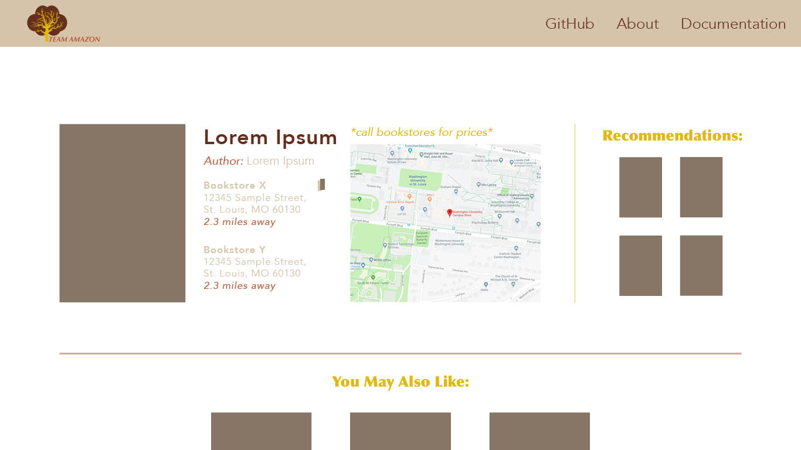
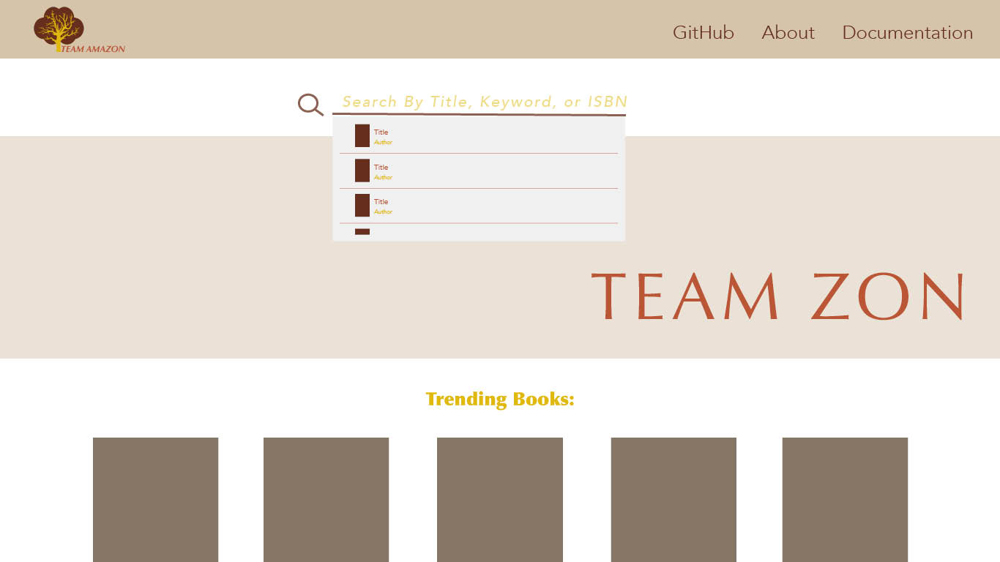

Julia Dickerman, Lucas Florence, Jin Han, Zahra Lambe, Dominique Senteza
GithubAs college students, we are often tasked with supplemental readings in some of our courses. However, the reading material is not always available online or in our WashU bookstore. We created this website as a resource to help students easily determine the closest place to rent or purchase books they may need for class or other purposes.
We took inspiration for our project from the numerous book searching sites available for bookstores and libraries. Our website is different because it combines the stocks of multiple distributors in order to help the user narrow down the most convenient option for themselves based on location.
We created this website to help answer the following questions:
Our initial design for the website focused on isolating the important pages a user would need to navigate the page. We decided on:
As shown below here are our refined mockups based on the feedback from our MVP meeting:
 Notice the addition of the following:
As detailed in one of the images above, our minimum viable product consisted of building out the home, search results, and book details pages as per our original mockups. We hosted the site on an AWS instance and made placeholder search code since we had no integrated with our complementary group yet. Work was split up as such:
Our goals following the comletion of the MVP was to:
The work breakdown for the final product was as follows:
This project could be further developed to include price comparisons for each of the locations that carry a book. We couldn't get access to this information because of the scope of the project, however, price could be another factor in addition to location that could sway a consumer's decision to purchase or not from a certain vendor.